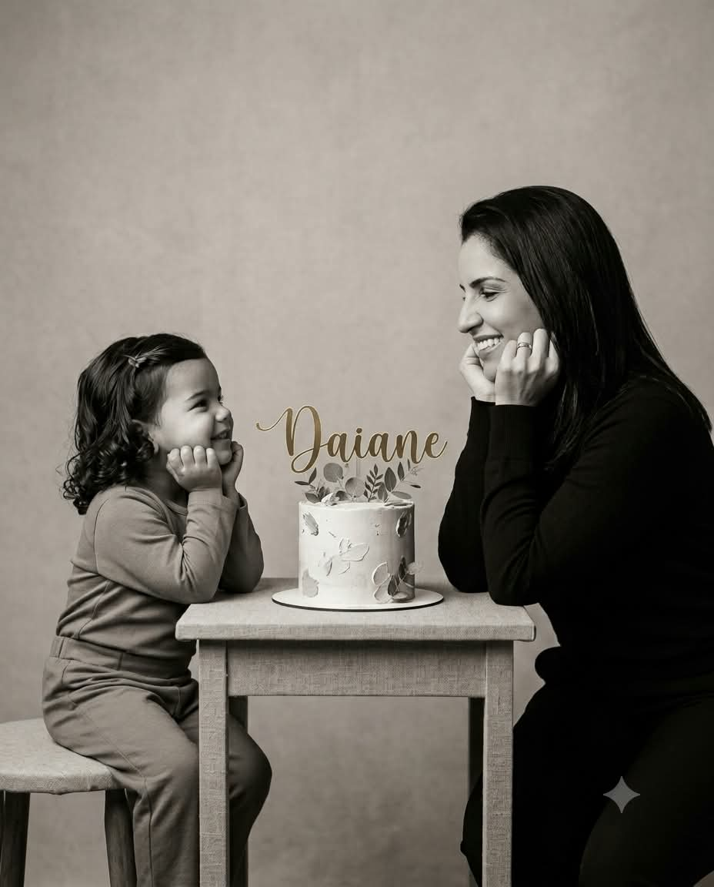

01
Perceber
Reconheça onde o piloto automático assumiu o comando e o que você vem adiando.
Uma experiência digital de 31 dias, com reflexões e pequenas ações para mulheres que cuidam de todos e querem voltar a escolher por si.

Cuida de tudo e de todos, mas quase nunca se coloca na própria agenda.
Sente que os dias passam e decisões importantes continuam esperando.
Não quer uma mudança impossível — quer um primeiro passo verdadeiro.
Deseja construir uma direção com mais consciência, presença e autonomia.
A agenda está cheia. As pessoas contam com você. Sempre existe uma urgência, uma tarefa, alguém precisando de cuidado.
E, sem perceber, sua própria vida vai ficando para depois — não por falta de vontade, mas porque o automático parece ser o único jeito de seguir.
Não é preciso abandonar tudo. É preciso voltar a escolher para onde você está indo.
Um percurso guiado para transformar consciência em decisões pequenas, possíveis e alinhadas à vida que você quer construir.
Reconheça onde o piloto automático assumiu o comando e o que você vem adiando.
Olhe para sua vida com mais consciência e escolha o que precisa mudar de direção.
Transforme cada reflexão em uma decisão pequena, concreta e possível agora.

Para os sonhos que ficaram pelo caminho, para as escolhas que trouxeram você até aqui e para tudo aquilo que ainda pode começar.
Porque a mulher que você é hoje ainda carrega a menina que um dia sonhou com essa vida.
E talvez esteja na hora de olhar para ela e se perguntar:
Em que momento eu comecei a me deixar para depois?
A vida já começou. E você ainda pode escolher o que fará com os próximos capítulos.
Uma nova oportunidade a cada dia para observar, decidir e avançar.
Uma experiência digital para acompanhar pelo celular, tablet ou computador.
Perguntas com propósito e pequenas decisões para colocar em prática.
Um caminho para enxergar seus movimentos e reconhecer sua própria história.